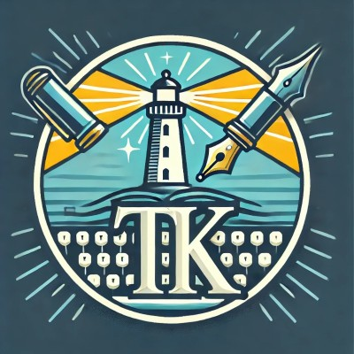

Tasmiha Khan
Co-founder
Tasmiha brings a substantial background in journalism, nonprofit work, and social impact. Her experience includes working with and reporting on mission-driven organizations, examining how institutions serve communities, and understanding the human realities behind programs, policies, and funding decisions.
Her reporting has appeared in The New York Times, National Geographic, TIME, and Al Jazeera, and she is a Knight Science Journalism Fellow at MIT. That background shapes how we approach interviews, evidence, and the responsibility of representing the people behind an organization's work.
She brings a perspective that keeps Inkpactful's work connected to the people, communities, and missions represented within every report and communication.